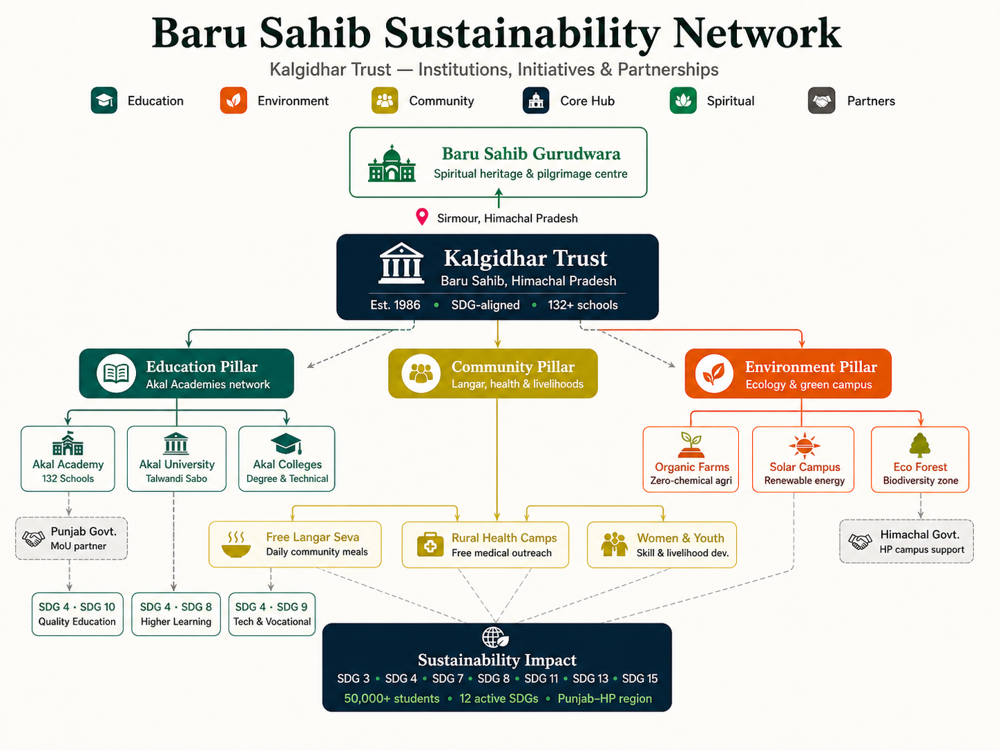

Our Network
From our headquarters in Baru Sahib to every corner of Punjab and Himachal Pradesh, we are building a future of education, healthcare, sustainability and innovation.

Who We Work With
We collaborate with governments, NGOs, universities, healthcare providers, and communities — all aligned toward a sustainable future.
State and central government partnerships for rural development, health, and education initiatives.
Academic institutions collaborating on sustainability research, data, and curriculum development.
Mission-aligned organisations co-delivering programmes across health, education, and environment.
CSR-driven businesses supporting solar, technology, and skills programmes across campuses.
Local panchayats and community leaders co-designing and owning the change in their regions.
UN bodies and international development partners supporting SDG-aligned work on the ground.
Whether you're a researcher, partner organisation, or individual — join the growing network transforming lives across Punjab and Himachal Pradesh.